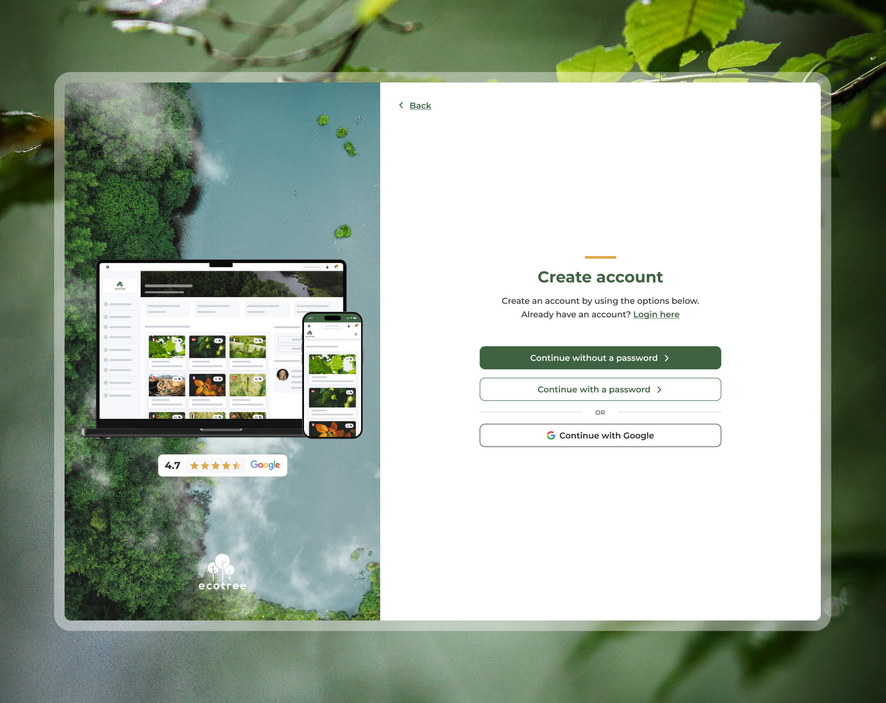
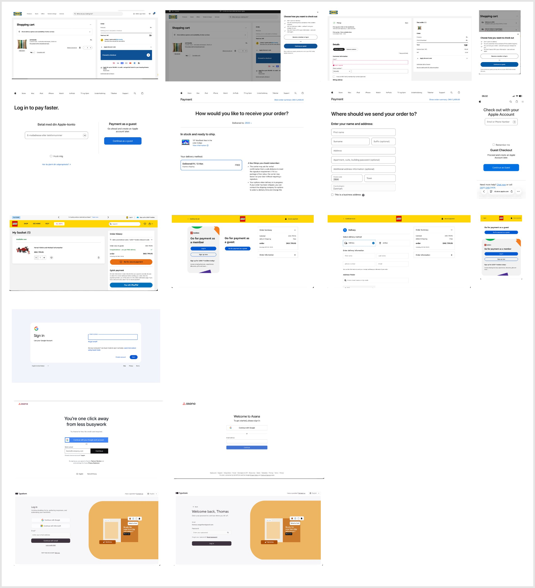
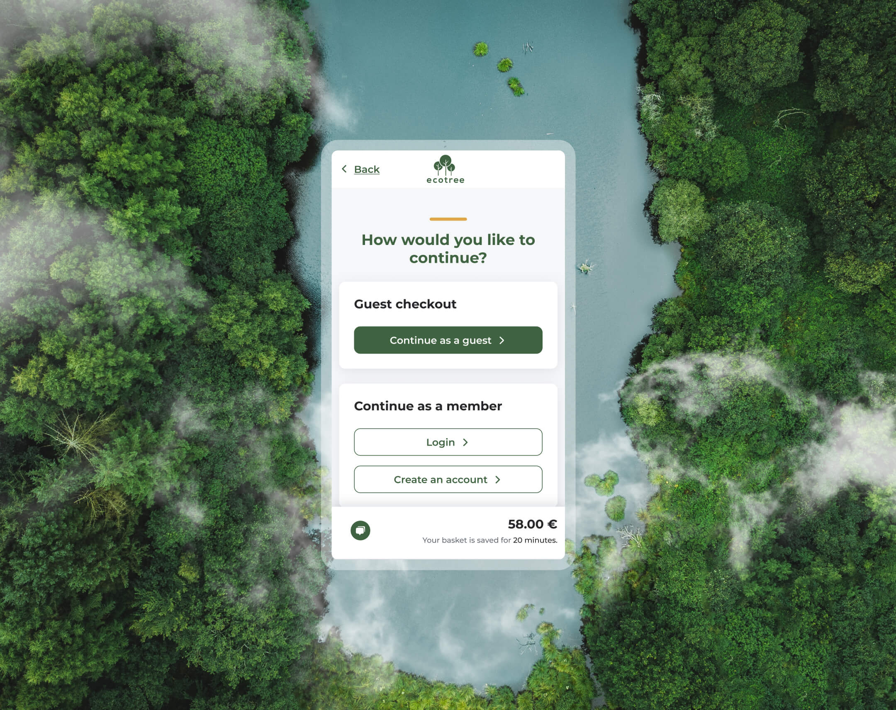
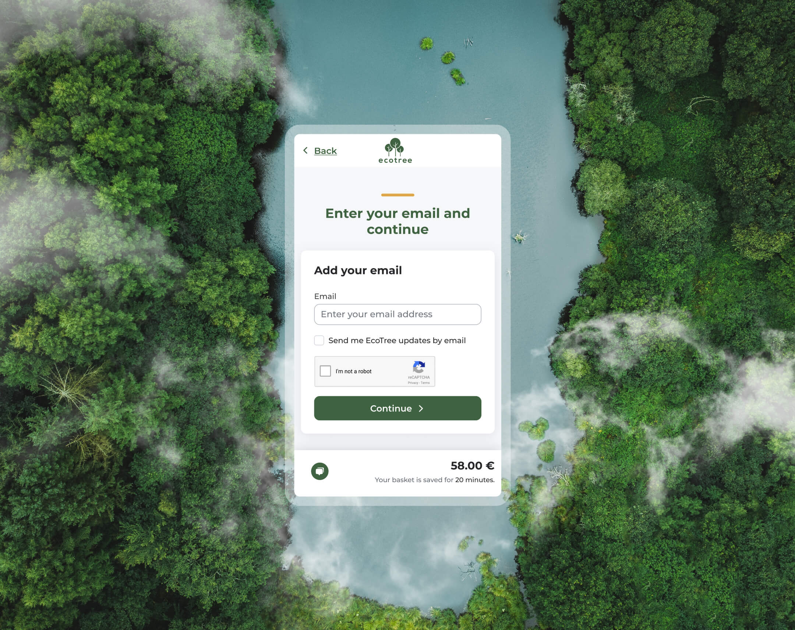
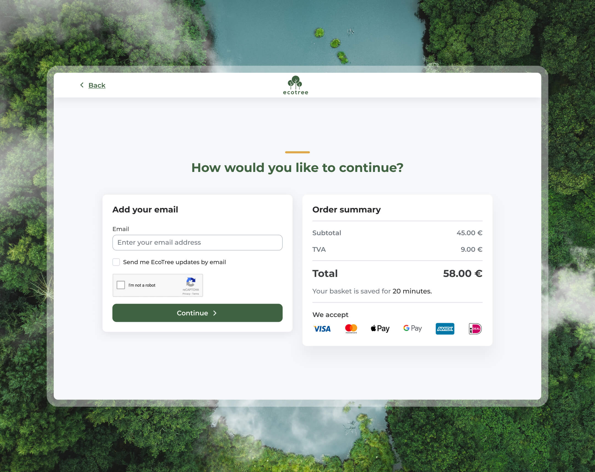
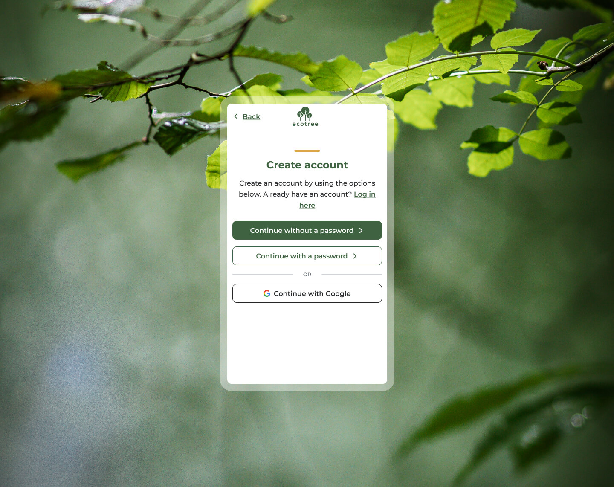
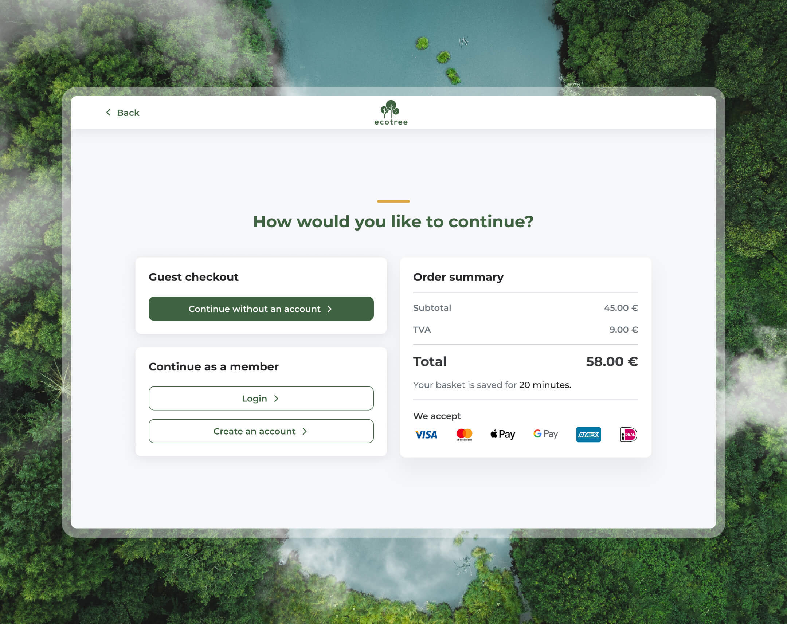

Removed the account creation wall from EcoTree's purchase flow. More than half of new customers now use it.

EcoTree's checkout required users to create an account before completing a purchase. For someone buying a tree as a gift or trying the product for the first time, this was a real friction point — and we could see it in the data.
Users had to register before they could buy, adding unnecessary steps to a transaction that should be frictionless.
Analytics showed users abandoning at the account creation step — a clear signal that the wall was costing conversions.
Someone who just wants to buy one tree as a gift has no reason to create an account. We were making them do it anyway.
Pulled funnel analytics to quantify drop-off at the account creation step. Identified it as the highest-friction moment in the checkout flow before any design work started.
Analyzed how IKEA, Apple, LEGO, Asana and Typeform handle the account/guest decision. Mapped the patterns that work: guest as primary CTA, account creation as a clearly optional track.
Sketched both the guest path and the redesigned account creation path together. Needed both to ship — removing the account wall without improving account creation would have shifted the problem rather than solving it.
Designed both layouts from the start. The mobile modal and desktop split-panel have different constraints — solving them together prevented late-stage rework.
Worked directly with the development team through implementation. Reviewed across devices and edge cases before launch.
The clearest pattern across IKEA, Apple and LEGO: guest checkout as the path of least resistance, with account creation as a separate, clearly optional track.

"Guest checkout should be the primary CTA — not hidden below login. Users who complete a purchase as a guest can always create an account afterwards, once they've already had a good experience."
The new flow presents a clear choice upfront: continue as a guest, or log in / create an account. Guest checkout is the primary option. The design works across both mobile and desktop, adapting the layout without changing the logic.



For users who do want an account, we also redesigned that path. Passwordless sign-in via magic link is the default — it removes the friction of choosing and remembering a password, and it works better on mobile.


The decision of what gets the primary CTA is more impactful than any visual detail. Getting that hierarchy right drove the 50%+ adoption number.
Seeing how IKEA, Apple and LEGO handle this gave the team shared vocabulary and made it easier to justify decisions internally.
The modal and split-panel serve the same logic, but the layout constraints are completely different. Designing both from the start avoided late-stage adaptations.
Offering "continue without a password" as the default reduced the perceived effort of signing up for users who want the account benefits without the overhead.